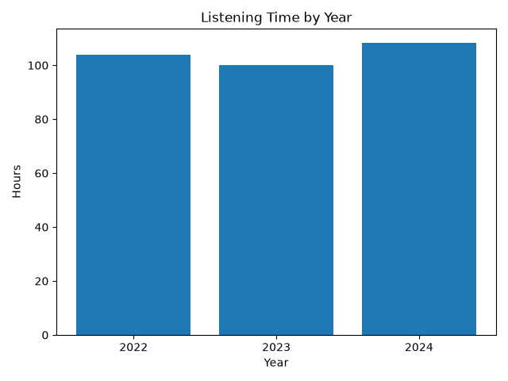
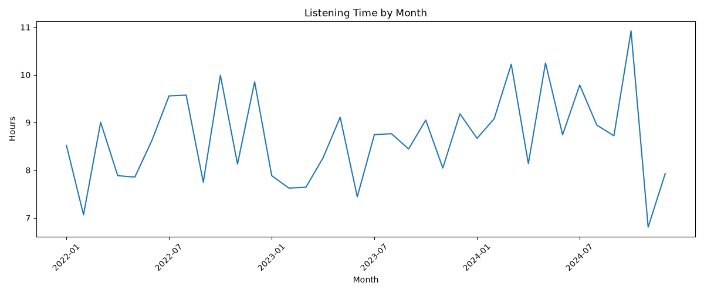
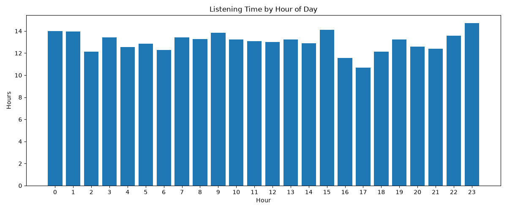
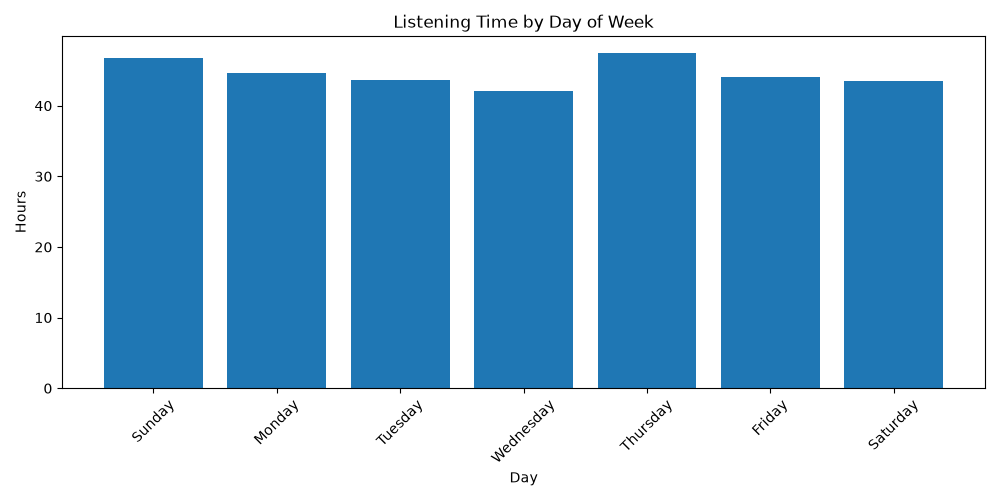
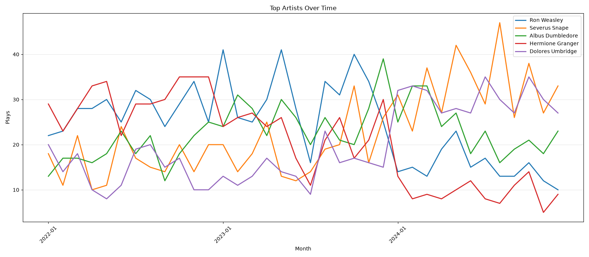

| Rank | Artist | Hours |
|---|---|---|
| 1 | Severus Snape | 48.93 |
| 2 | Dolores Umbridge | 47.97 |
| 3 | Ron Weasley | 46.38 |
| 4 | Albus Dumbledore | 44.89 |
| 5 | Hermione Granger | 36.98 |
| 6 | Harry Potter | 36.05 |
| 7 | Minerva McGonagall | 22.33 |
| 8 | Draco Malfoy | 15.09 |
| 9 | Rubeus Hagrid | 7.72 |
| 10 | Lord Voldemort | 5.87 |
| Rank | Artist | Hours |
|---|---|---|
| 1 | Harry Potter | 20.5 |
| 2 | Hermione Granger | 18.01 |
| 3 | Ron Weasley | 17.19 |
| 4 | Albus Dumbledore | 12.04 |
| 5 | Severus Snape | 11.97 |
| 6 | Dolores Umbridge | 11.32 |
| 7 | Minerva McGonagall | 5.25 |
| 8 | Draco Malfoy | 3.49 |
| 9 | Lord Voldemort | 2.14 |
| 10 | Rubeus Hagrid | 1.9 |
| Rank | Artist | Hours |
|---|---|---|
| 1 | Ron Weasley | 19.73 |
| 2 | Albus Dumbledore | 16.98 |
| 3 | Severus Snape | 13.72 |
| 4 | Hermione Granger | 13.35 |
| 5 | Dolores Umbridge | 12.43 |
| 6 | Harry Potter | 11.65 |
| 7 | Minerva McGonagall | 4.91 |
| 8 | Draco Malfoy | 3.49 |
| 9 | Lord Voldemort | 1.99 |
| 10 | Rubeus Hagrid | 1.94 |
| Rank | Artist | Hours |
|---|---|---|
| 1 | Dolores Umbridge | 24.22 |
| 2 | Severus Snape | 23.24 |
| 3 | Albus Dumbledore | 15.87 |
| 4 | Minerva McGonagall | 12.17 |
| 5 | Ron Weasley | 9.45 |
| 6 | Draco Malfoy | 8.12 |
| 7 | Hermione Granger | 5.62 |
| 8 | Harry Potter | 3.9 |
| 9 | Rubeus Hagrid | 3.88 |
| 10 | Lord Voldemort | 1.74 |
| Rank | Song | Artist | Hours |
|---|---|---|---|
| 1 | Highest Inquisitor | Dolores Umbridge | 18.45 |
| 2 | half blood prince | Severus Snape | 18.02 |
| 3 | Power lust | Albus Dumbledore | 17.37 |
| 4 | lily | Severus Snape | 17.34 |
| 5 | What Cornelius Doesn't Know | Dolores Umbridge | 16.83 |
| 6 | Be Someone | Ron Weasley | 16.6 |
| 7 | Up to No Good | Ron Weasley | 15.42 |
| 8 | I Won, Haven't I | Ron Weasley | 14.36 |
| 9 | Second Chances | Albus Dumbledore | 14.22 |
| 10 | Taken by a Giant Man | Harry Potter | 13.98 |
| Rank | Song | Artist | Plays |
|---|---|---|---|
| 1 | lily | Severus Snape | 300 |
| 2 | Be Someone | Ron Weasley | 298 |
| 3 | I Won, Haven't I | Ron Weasley | 296 |
| 4 | Power lust | Albus Dumbledore | 295 |
| 5 | Up to No Good | Ron Weasley | 287 |
| 6 | Taken by a Giant Man | Harry Potter | 266 |
| 7 | half blood prince | Severus Snape | 265 |
| 8 | Second Chances | Albus Dumbledore | 263 |
| 9 | Time Goes By (and Comes Back Around) | Hermione Granger | 261 |
| 10 | The Prophecy | Albus Dumbledore | 258 |
| Rank | Album | Artist | Hours |
|---|---|---|---|
| 1 | doe | Severus Snape | 48.93 |
| 2 | Lies | Dolores Umbridge | 47.97 |
| 3 | The Illuminator | Ron Weasley | 46.38 |
| 4 | My Favorite Ballads | Albus Dumbledore | 44.89 |
| 5 | Love, Spells | Hermione Granger | 36.98 |
| 6 | Hogwarts | Harry Potter | 36.05 |
| 7 | Babbity Rabbity | Minerva McGonagall | 22.33 |
| 8 | UNTOUCHABLE | Draco Malfoy | 15.09 |
| 9 | Me Songs | Rubeus Hagrid | 7.72 |
| 10 | The Dark Lord (Tom's Version) | Lord Voldemort | 5.87 |
| Year | Hours |
|---|---|
| 2022 | 103.8 |
| 2023 | 100.19 |
| 2024 | 108.2 |

| Month | Hours |
|---|---|
| 2022-01 | 8.52 |
| 2022-02 | 7.06 |
| 2022-03 | 9.0 |
| 2022-04 | 7.88 |
| 2022-05 | 7.85 |
| 2022-06 | 8.63 |
| 2022-07 | 9.56 |
| 2022-08 | 9.57 |
| 2022-09 | 7.75 |
| 2022-10 | 9.99 |
| 2022-11 | 8.13 |
| 2022-12 | 9.85 |
| 2023-01 | 7.88 |
| 2023-02 | 7.62 |
| 2023-03 | 7.64 |
| 2023-04 | 8.26 |
| 2023-05 | 9.11 |
| 2023-06 | 7.44 |
| 2023-07 | 8.74 |
| 2023-08 | 8.76 |
| 2023-09 | 8.44 |
| 2023-10 | 9.05 |
| 2023-11 | 8.04 |
| 2023-12 | 9.18 |
| 2024-01 | 8.67 |
| 2024-02 | 9.08 |
| 2024-03 | 10.22 |
| 2024-04 | 8.13 |
| 2024-05 | 10.25 |
| 2024-06 | 8.74 |
| 2024-07 | 9.79 |
| 2024-08 | 8.95 |
| 2024-09 | 8.72 |
| 2024-10 | 10.92 |
| 2024-11 | 6.8 |
| 2024-12 | 7.93 |



| Rank | Song | Artist | Skip Rate (%) |
|---|---|---|---|
| 1 | Even I Miss My Nose Sometimes | Lord Voldemort | 31 |
| 2 | HAPPIE TIMES | Rubeus Hagrid | 25 |
| 3 | Me, Who Must Not Be Named | Draco Malfoy | 23 |
| 4 | Be Someone | Ron Weasley | 23 |
| 5 | Good or Evil | Draco Malfoy | 23 |
| 6 | I WILL HAVE ORDER | Dolores Umbridge | 23 |
| 7 | half blood prince | Severus Snape | 22 |
| 8 | Power lust | Albus Dumbledore | 22 |
| 9 | potions master, death eater | Severus Snape | 22 |
| 10 | Second Chances | Albus Dumbledore | 21 |
| Rank | Song | Artist | Early Skip Rate (%) |
|---|---|---|---|
| 1 | half blood prince | Severus Snape | 8 |
| 2 | Good or Evil | Draco Malfoy | 8 |
| 3 | LOVE ME JOB | Rubeus Hagrid | 7 |
| 4 | Avada Kedavra | Lord Voldemort | 7 |
| 5 | Me, Who Must Not Be Named | Draco Malfoy | 6 |
| 6 | potions master, death eater | Severus Snape | 6 |
| 7 | lily | Severus Snape | 6 |
| 8 | I WILL HAVE ORDER | Dolores Umbridge | 5 |
| 9 | Babbling, Bumbling Band of Baboons | Minerva McGonagall | 5 |
| 10 | Be Someone | Ron Weasley | 5 |
| Rank | Song | Artist | Month | Plays | Share of Month (%) |
|---|---|---|---|---|---|
| 1 | Taken by a Giant Man | Harry Potter | 2023-07 | 78 | 47 |
| 2 | lily | Severus Snape | 2024-08 | 22 | 14 |
| 3 | Cedric | Harry Potter | 2022-06 | 20 | 12 |
| Rank | Artist | Month | Plays | Share of Month (%) |
|---|---|---|---|---|
| 1 | Harry Potter | 2023-07 | 84 | 50 |
| Rank | Album | Artist | Month | Plays | Share of Month (%) |
|---|---|---|---|---|---|
| 1 | Hogwarts | Harry Potter | 2023-07 | 84 | 50 |
| 2 | doe | Severus Snape | 2024-08 | 47 | 29 |
| 3 | Hogwarts | Harry Potter | 2022-12 | 49 | 27 |
| 4 | The Illuminator | Ron Weasley | 2023-01 | 41 | 27 |
| 5 | Hogwarts | Harry Potter | 2022-06 | 43 | 26 |
| 6 | The Illuminator | Ron Weasley | 2023-05 | 41 | 25 |
| 7 | The Illuminator | Ron Weasley | 2023-10 | 40 | 25 |
| 8 | Lies | Dolores Umbridge | 2024-11 | 30 | 24 |
| 9 | My Favorite Ballads | Albus Dumbledore | 2023-12 | 39 | 23 |
| 10 | doe | Severus Snape | 2024-06 | 36 | 23 |
